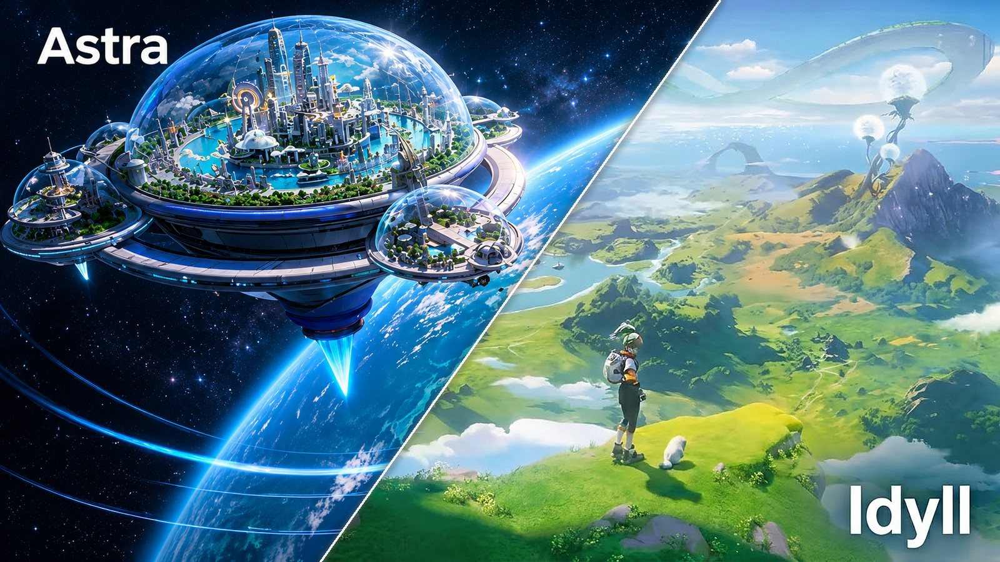

Prologo
La storia di Aniimo

Tutto comincia con una fine. Quando la Terra non poté più essere casa, gli esseri umani partirono a bordo di un rifugio costruito per l'ultima ora del mondo, e portarono con sé i semi della loro civiltà. Il viaggio fu lungo. Alla fine, davanti a loro, apparve Idyll: un continente splendido e vitale, dove in ogni angolo si muoveva un Aniimo. Gli umani fecero ciò che gli esploratori hanno sempre fatto: costruirono una città sospesa sopra quelle terre, Astra, e cominciarono a esplorarle.
Ma Idyll non era una terra vuota, e non era nata per caso. Si narra che nove Aeon l'avessero creata insieme, ciascuno a guardia di un dominio diverso, e che sotto la loro guida gli Idylliani e gli Aniimo vivessero in armonia. Il battito di quel mondo scorreva sotto la superficie: le Vene, una fitta rete di energia che manda in alto la forza di cui ogni vita ha bisogno, e che gli Idylliani veneravano come il dono degli Aeon. Dove le Vene si incontrano nascono i Rami, e dove l'energia è più forte la terra fiorisce.
Prima degli Idylliani di oggi, però, c'era stata un'altra civiltà. L'Antica Idyll aveva inventato la Mechina, una tecnologia prodigiosa nata sotto la guida degli Aeon Primi, fatta di dispositivi magici capaci di incanalare l'energia delle Vene. Poi qualcosa si spezzò: una violenta vibrazione scosse il continente e l'energia delle Vene si disperse. Gli antichi costruirono i Santuari per ripararle, ma di quella civiltà restano soltanto rovine, mentre l'energia vagante, condensata nei secoli in Ambra Lumin, giace sparsa per la terra. Furono proprio i cristalli e le rovine trovati da Astra a dare vita alla Lumintech, la tecnologia che ha risolto i problemi energetici della città sospesa.
La ferita non si è mai davvero chiusa. Cent'anni fa, sulla Costa dello Zefiro, la Vena si spezzò e la terra perse i suoi colori: i bambini nascevano deboli e senza percezione dei colori, e persino le maree e il tempo governato da Protos impazzirono. A salvare la costa fu l'Irisalis Irelia, che con colori e profumo richiamò il Flusso Prismana e fece rifiorire Bloomville. Ma una sola creatura, per quanto rara, non può guarire una Vena. Per questo, ancora oggi, ogni dieci anni, quando l'energia è al minimo, l'Irisalis si risveglia, dona di nuovo colore alla terra e poi ricade nel sonno dentro la Vena.
Su questo sfondo arrivano i nuovi esploratori. Ad Astra gli Aniimo sono diventati una vera mania, e l'Istituto Polaris, fondato dall'erudito Oswen, li studia e prepara le spedizioni su Idyll. Chi riesce a fare Twine (intreccio) con un Aniimo, un legame antico quanto l'Antica Idyll che permette di condividere i sensi e, nel gioco, di fondersi con la creatura, si chiama Pathfinder. Il gioco non propone un eroe con un nome: il Pathfinder è il ruolo del giocatore, e chiunque arrivi a Idyll può diventarlo.
La storia che vive il giocatore comincia in piccolo. Arrivi a Idyll come osservatore speciale, con l'Istituto Polaris alle spalle e la guida Nicole accanto, e muovi i primi passi a Starfall Valley. Poi il tuo terminale viene inghiottito da un antico cubo di pietra che trascina dentro anche te, tra rovine con murali di umani e Aniimo: lì due piccoli Aniimo, Helion e Lunara, si risvegliano e tu accetti la benedizione di uno dei due. Da qui il racconto ti porta all'Istituto, dove incontri il direttore Oswen e Dr. Lewis, e poi a Bloomville e al mistero di Irelia, il punto in cui la lore del continente e la storia del giocatore si incontrano.
La vera storia e la lore di Aniimo non stanno solo nelle sequenze in game, ma nei frammenti sparsi per il mondo: le schede della schermata Lore, i murali, le leggende raccolte lungo la strada. È quello che questa raccolta mette in fila, partendo da Astra e arrivando fino alla Costa dello Zefiro.
Capitolo 1
Astra e l'Istituto Polaris

Alziamo lo sguardo. Sopra Idyll, sospesa tra le nuvole, c'è Astra: una città nata da un antico rifugio costruito per la fine del mondo, che portava con sé i semi della civiltà terrestre e che, dopo un lungo viaggio, scoprì il continente sottostante. Gli umani edificarono la città in volo sopra di esso e cominciarono a esplorarlo, e su Idyll trovarono cristalli di energia e rovine di una civiltà antica. Da quelle scoperte è nata la Lumintech, una tecnologia pulita ed efficiente alimentata dai Cristalli, che ha risolto i problemi energetici della città. Ma il cambiamento più visibile, nei quartieri nuovi, riguarda gli Aniimo: aiutano gli astreani a esplorare Idyll, i giovani sognano un compagno tutto loro e molte creature si sono trasferite in città insieme ai loro tutori, tanto che strutture e prodotti pensati per loro sono ormai dappertutto.

Il cuore di questa vita nuova è l'Istituto Polaris. Lo fondò Oswen, un erudito ed esploratore, per studiare gli Aniimo e organizzare le spedizioni su Idyll, e lì studenti e creature si allenano e crescono insieme. L'Istituto ha tre anime. L'Aniimologia documenta gli ecosistemi, analizza i profili biologici, costruisce l'Aniilog, divulga la conoscenza e sviluppa strutture per una convivenza armoniosa tra umani e Aniimo. Il Pathfinding parte verso i territori inesplorati e le rovine antiche, per svelare i segreti di Idyll. La Battle Art, infine, prepara ai pericoli della natura e, con simulazioni olografiche (Holo), affina la coordinazione in battaglia tra umano e Aniimo.

A chi parte in spedizione l'Istituto affida tre strumenti. L'Avamposto è la base su Idyll: offre valutazioni di livello, rapporti della Research Console, riposo e cure, rifornimenti e teletrasporto. L'Aniipod serve a catturare, equipaggiare e allenare gli Aniimo, e al suo interno una piegatura dello spazio crea un comodo luogo di riposo. L'Omni-glove è un dispositivo Lumintech multifunzione, che integra applicazioni diverse e permette, tra l'altro, di potenziare il twining (intreccio), lanciare abilità e trasmettere energia. Da qui comincia anche la storia che vive il giocatore (Capitolo 9): si entra nella squadra di spedizione come osservatore speciale e poi nell'Istituto. Ma tutta questa tecnologia ruota attorno a una sola cosa, il continente che vive sotto Astra, ed è da lì che dobbiamo partire.

Capitolo 2
Idyll e l'Antica Idyll

Torniamo, ora, a ciò che sta sotto Astra. Dopo aver detto addio alla Terra perduta, l'umanità trovò Idyll: un continente splendido e vitale, con Aniimo in ogni angolo. A differenza della frenesia moderna di Astra, qui la natura è rimasta intatta.
Si narra che nove Aeon abbiano creato insieme Idyll, ognuno a protezione di un dominio diverso, e che sotto la loro guida Idylliani e Aniimo vivano in armonia.

Gli Idylliani, di cuore semplice, costruiscono insediamenti e sviluppano le loro attività con l'aiuto delle creature.

Ma prima di loro c'era stata un'altra civiltà. L'Antica Idyll fu gloriosa e ora giace in rovina, e di lei restano soprattutto le Mechina: i misteriosi meccanismi e le strutture che i suoi abitanti eressero sotto la guida degli Aeon Primi. Erano dispositivi magici capaci di incanalare l'energia delle Vene, e si dice che il loro scopo originario fosse riparare le Vene danneggiate. A farle ancora funzionare sono i Santuari, i dungeon-puzzle del gioco, costruiti sopra i nodi principali delle Vene e sparsi per tutto il continente: se ne contano diciassette.


Entrare in un Santuario è come entrare in un luogo che non vuole ospiti. L'instabilità energetica al suo interno impedisce di portare con sé la propria squadra, così bisogna svegliare una statua sigillata e fondersi, per un tempo limitato, con le abilità elementali di un Aniimo nativo del dungeon: elettricità, ghiaccio, magnetismo. Poi si risolvono i puzzle: blocchi polarizzati e circuiti elettrici e magnetici da collegare con la telecinesi, per riattivare i flussi di energia. In fondo a ogni Santuario c'è il Tesseract, un nucleo cubico: quando lo si attiva, le Mechina si allineano, la Vena viene riparata e si ottiene l'Ambra Lumin. Ma di quali Vene stiamo parlando? Ce ne occuperemo nel Capitolo 6. Per ora basta sapere che questo continente è popolato da creature straordinarie, e che da loro dipende quasi tutto.
Capitolo 3
Gli Aniimo

Chi sono, dunque, gli Aniimo? È il nome collettivo delle creature che abitano Idyll: di forme e abitudini molto varie, padroneggiano l'Energia Elementale e possono evolversi. Gli sviluppatori le presentano come esseri magici, ciascuna con una personalità, abilità e un proprio modo di adattarsi al continente. Ma per il Pathfinder non sono soltanto compagni di viaggio: grazie al Twine (intreccio), il legame che unisce umani e Aniimo, il giocatore può fondersi con una creatura e usarne il corpo, i movimenti e le abilità come fossero i suoi. È questa fusione a rendere ogni Aniimo diverso dagli altri anche nel modo di giocare: scegliere con chi intrecciarsi significa scegliere come muoversi e come combattere.
Ogni creatura porta con sé una natura e ha uno o due dei nove elementi (Fuoco, Acqua, Erba, Fulmine, Ghiaccio, Terra, Vento, Luce, Buio), che decidono contro chi è forte o debole, e in battaglia occupa uno dei cinque ruoli: DPS, Heal, Support, Break ed Energy, detto anche Regen. Poi c'è il tempo, o meteo, che la cambia costantemente e permette di trovare Aniimo di diverse forme nelle varie regioni. L'evoluzione è una tappa fondamentale della crescita: rafforza le abilità e cambia l'aspetto, e alcuni Aniimo, in base ai fattori che li influenzano mentre crescono, possono ramificarsi in individui diversi. E per sopravvivere, la stessa specie può assumere Forme diverse a seconda di regione, clima, momento della giornata o ambienti particolari; la Forma più rara compare soltanto in ambiente Prismana, figlia del Flusso Prismana di cui parleremo nel Capitolo 6.

Come vivono, quando nessuno li guarda? Reagiscono all'ambiente e cambiano comportamento di conseguenza. Budclaw, ad esempio, è un Aniimo simile a un granchio, timido e bravo a scavare e a muoversi su terreni diversi, ma vede poco sottoterra: se urta una roccia si stordisce, e diventa più facile da catturare. Nimbi, una pecora a forma di nuvola, è leggerissima e capace di salti altissimi, e durante i temporali si comporta in modo molto diverso. Quali Aniimo compaiono dipende da ambiente, meteo, fenomeni e ora del giorno; tra i biomi ci sono Driftwise Meadow, Sandcastle Hill e Rosetower Wood. Con il Twine il giocatore entra persino nella loro società, fatta di scambi e abitudini quotidiane. E chi vuole catturarli farà bene ad avvicinarsi da dietro, nascosto tra erba alta e fiori, oppure ad approfittare del loro sonno.
E cosa fanno? Dipende da dove li trovi. Quando il Pathfinder si fonde con loro, le loro capacità diventano il modo di attraversare il mondo: non esiste una cavalcatura separata, ma ogni Aniimo ha un proprio tratto di mobilità, e c'è chi scatta, chi plana, chi nuota, chi si arrampica e chi scava. Flameruff apre le aree bloccate dal fuoco, Celestis permette di scalare le pareti e planare tra le cime, Skippy si occupa dell'acqua. In battaglia, che è in tempo reale, ogni ruolo ha il suo compito: gli Aniimo Break, per esempio, puntano a esaurire la barra del nemico, che così resta stordito e subisce danni extra.
Quando non sono in fusione con il Pathfinder, gli Aniimo hanno una vita propria, e una casa. Nascono dalle uova, che si incubano nell'Hatchinator. Nell'Homeland, a casa del Pathfinder, gli Aniimo catturati diventano operai che coltivano, scavano, producono e preparano bevande mentre il giocatore esplora: basta trascinare una creatura dalla riserva alla casa e, se le sue abilità corrispondono alle strutture, lavora da sola. Contano elemento, abilità di lavoro e personalità, e se questa coincide con quella consigliata dalla struttura il rendimento sale. Gli Aniimo Luce illuminano la casa, quelli Buio raccolgono, tagliano ed essiccano, gli addetti al trasporto portano i prodotti al magazzino e senza di loro la produzione si blocca, e tutti hanno bisogno di cibo, che si mette nelle ciotole. Eppure, per quanto operosi, gli Aniimo sanno diventare qualcosa di più per chi li accompagna, ed è questo il segreto che ci porta ai Capitoli 4 e 5: prima chi li accompagna, il Pathfinder, poi il legame che li unisce, il Twine.
Capitolo 4
Il Pathfinder

Prima di parlare di fusione, bisogna capire chi la vive. In ogni storia di esplorazione c'è qualcuno che apre la strada, e a Idyll quel qualcuno si chiama Pathfinder. Il nome ha radici antiche: dai tempi dell'Antica Idyll si chiamano così i pochi capaci di fare Twine con un Aniimo, un dono raro di cui le rovine conservano ancora la memoria. Ad Astra, oggi, il compito di formarli spetta all'Istituto Polaris: il suo dipartimento di Pathfinding prepara chi parte sul campo, tra territori inesplorati e rovine antiche, per svelare i segreti di Idyll. Nel gioco, però, il Pathfinder non è un eroe con un nome e una storia già scritta: è il ruolo del giocatore, e chiunque arrivi a Idyll può diventarlo.
La strada di un Pathfinder comincia in piccolo. Arrivi come osservatore speciale, con un terminale in mano e l'idea di raccontare la tua avventura; poi entri nell'Istituto e il tuo primo compito è guadagnare il riconoscimento del Ramo, offrendogli Ambra Lumin. È l'idea che attraversa tutta la storia: Idyll non si conquista, ci si fa riconoscere. Da lì in avanti l'Addestramento d'élite scandisce il cammino: ogni promozione ti porta davanti a uno studente anziano e a una prova, da Studente di II Grado fino a Trailblazer, passando per valutazioni come la «Veinwalker Assessment», in cui si cammina lungo le Vene per mostrare cosa si è imparato.
Per questo viaggio l'Istituto mette a disposizione tre strumenti. L'Avamposto è la base su Idyll, dove ricevere valutazioni di livello, riposare, curarsi, fare rifornimento e teletrasportarsi. L'Aniipod serve a catturare, equipaggiare e allenare gli Aniimo, e al suo interno una piegatura dello spazio crea un luogo di riposo. L'Omni-glove, il dispositivo Lumintech che ogni membro porta al braccio, permette di lanciare abilità, trasmettere energia e potenziare il Twine.
Ma cosa fa, in concreto, un Pathfinder? Esplora Idyll, cattura, addestra e combatte insieme agli Aniimo. Cattura con gli Aniipod, usando trappole e tempismo. Affronta i Santuari del Capitolo 2, mini-dungeon a puzzle che si fanno da soli o in cooperativa e dove, senza la squadra, ci si affida alle abilità di un Aniimo del posto. Può competere: l'Egg Heist è una modalità PvPvE in cui squadre di tre giocatori cercano e combattono nelle Isole Perdute (Lost Isles), e nella metropoli fluttuante si incontrano altri Pathfinder, si condividono storie e si sfidano battaglie competitive. E ha una casa: ogni Pathfinder possiede un camper personale (RV), parcheggiato in un campeggio del mondo aperto dove incontrare altri giocatori, e tornando all'Homeland può coltivare, costruire e arredare insieme ai suoi Aniimo. È la parte più rilassata del ruolo, la base che sostiene l'esplorazione.
Eppure nessuno di questi strumenti, da solo, basta a fare un Pathfinder. Ciò che lo rende tale è l'altra metà del suo ruolo, quella che lo lega alle creature di Idyll: il Twine.
Capitolo 5
Il Twine (intreccio)

Immagina di non essere più solo dentro il tuo corpo. È questo, in fondo, il Twine (intreccio): il cuore del rapporto tra umani e Aniimo, un legame misterioso che unisce i cuori e permette di condividere i sensi. Nel gioco prende la forma di una vera fusione, riassunta dal motto Be One, Be All: il Pathfinder si sintonizza con un Aniimo e diventa tutt'uno con lui, e in Modalità Twine il suo personaggio assume la forma della creatura, si muove e usa le abilità come lei.
Nella lore è anche un modo di vedere. Un Pathfinder può osservare e percepire il mondo attraverso gli occhi del proprio Aniimo, e questo legame non è nato con il gioco: dai tempi dell'Antica Idyll si dice «fare twine» di chi riesce a unirsi a una creatura. L'Istituto Polaris ne migliora la stabilità con addestramento e dispositivi tecnologici, come l'Omni-glove del Capitolo 1, ma le ragioni profonde del Twine restano ancora da studiare. Come funzioni davvero, nessuno lo sa del tutto: si sa solo che, quando riesce, due esseri diversi smettono di essere due.
La fusione è prima di tutto il modo di attraversare Idyll. Non esiste una cavalcatura separata: ogni Aniimo ha un proprio tratto di mobilità, e con il Twine il Pathfinder vola, scava e corre, e supera ostacoli e puzzle legati all'abilità della creatura scelta. Non è legato a un solo compagno: in esplorazione può passare liberamente tra i quattro Aniimo della squadra e usare tutte le loro abilità, scegliendo di volta in volta il corpo più adatto al luogo in cui si trova. Nei Santuari, dove la squadra non può entrare, il Twine diventa l'unico strumento: ci si fonde per un tempo limitato con un Aniimo nativo del dungeon e se ne usano elettricità, ghiaccio o magnetismo.
Quando arriva lo scontro, i modi sono due. In Modalità Comando il Pathfinder resta se stesso e dà ordini ai suoi Aniimo; in Modalità Twine si fonde con una creatura e la controlla in prima persona, con i suoi movimenti, i suoi elementi e le sue abilità. Molti scontri difficili richiedono il Twine, perché è l'unico modo per schivare certi attacchi ad area. Nelle modalità a squadre, come Holo-Battle Interlink ed Egg Heist, solo il primo Aniimo del gruppo agisce davvero e gli altri possono dare soltanto un breve supporto con le abilità principali.
Il Twine non è solo una meccanica, è anche la prima prova della storia. Nelle rovine in cui si risveglia l'antico cubo, è facendo Twine con il nuovo compagno, Helion o Lunara, che riesci a respingerlo; poi i due Aniimo, esausti, tornano piccoli, e il legame resta. Da qui in avanti ogni passo del racconto è, in un modo o nell'altro, un passo fatto in due.
Resta una domanda: da dove viene l'energia che tiene vivo tutto questo? Per rispondere dobbiamo scendere sotto la superficie di Idyll, dove scorrono le Vene.
Capitolo 6
Le Vene

Sotto Idyll, nascosta a ogni sguardo, si estende un'intricata rete di Vene, come il polso stesso della natura. Mandano senza sosta in superficie l'energia necessaria alla crescita di ogni vita: dove l'energia è abbondante, tutto prospera. Dove le Vene convergono si formano i Rami. Gli Idylliani credono che gli Aeon portino vitalità alla terra attraverso le Vene e per questo li venerano: toccandone uno con sincerità si ascolta il battito della terra e si sente la benedizione degli Aeon. L'accettazione e la protezione delle Vene aiutano i Pathfinder a muoversi per Idyll; quando l'energia è forte rinvigorisce il corpo e richiama gli Aniimo nei dintorni, che si fanno attivi e scatenano un Wild Surge.

Nei nodi d'intersezione della rete sbocciano le Fioriture (Bloom), che permettono di spostarsi rapidamente da un nodo all'altro; molti insediamenti idylliani sorgono attorno a una di esse. Ma la rete porta anche una ferita. In un'epoca lontana una violenta vibrazione scosse Idyll e l'energia delle Vene si disperse: nei secoli, quell'energia vagante si è condensata in luminosa Ambra Lumin, sparsa per il territorio, e riportarla a un Ramo aiuta a nutrire le Vene. Quando un Ramo ne ha assorbita abbastanza, le Vene tornano a riversare vitalità nella terra e l'energia in eccesso sale verso il cielo, formando il brillante Flusso Prismana, che richiama i rari Aniimo di Forma Prismana. Rami, Fioriture, Ambra Lumin e Flusso Prismana non sono solo lore: sono anche meccaniche di gioco, e lo stesso filo lega le Mechina dei Santuari (Capitolo 2) alla leggenda di Irelia (Capitolo 8).
Anche i viaggi seguono il filo delle Vene: la rete di viaggio rapido sfrutta le correnti di Idyll e si accende, per ognuno dei diciassette Santuari, in due tempi. Prima basta avvicinarsi all'ingresso e interagire una volta: il terminale esterno si illumina e l'icona sulla mappa passa da grigia a blu, permettendo di teletrasportarsi sul posto anche senza aver completato il dungeon. Poi, risolvendo i puzzle e attivando il Tesseract, il Santuario viene segnato come completato, con ricompense, esperienza e potenziamenti permanenti. Per capire quanto può costare una Vena spezzata, però, bisogna andare dove è accaduto: sulla Costa dello Zefiro.
Capitolo 7
La Costa dello Zefiro

Ci sono luoghi dove il vento ha una voce, e la Costa dello Zefiro (Zephyr Coast) è uno di questi. È la terra dell'Aeon Aeolus, fertile e varia: prati verdi, isole sul mare e terra calda, ed è la macro-regione in cui comincia l'avventura. Le brezze marine portano il profumo di Duskwhisper, le onde suonano la melodia delle maree e gemme splendenti nascono dalla danza delle fiamme della terra. Il vento governa la costa attraverso Aeolus, mentre le maree rappresentano le isole dell'arcipelago.
Percorrendola si incontrano prima le Pianure Brezzose (Breezy Plains), l'area di partenza protetta per i primi passi, verdi pianure amate dal vento, dove sabbie argentee cuciono insieme mare blu e colline; nuvole basse vagano sui prati e ai piedi delle alture innevate un mare di fiori dipinge il paesaggio, con un piccolo villaggio di profumieri. Più al largo si stende l'arcipelago azzurro delle Isole Whisperwake, spezzato dalle maree, dove ogni isola ha il suo carattere: Bubble Drift fluttua serena come un sogno, cascate d'argento scuotono i crinali, e ossa di corallo appassite diventano solitari banchi di sabbia dove neve e ghiaccio custodiscono gli anni. Tra i luoghi abitati, Bloomville, chiamata «il luogo dove i fiori sbocciano in abbondanza», è celebre per fiori e profumi: ogni dieci anni vi si tiene la grande Festa della Fioritura (Bloom Festival), in cui gli abitanti offrono i profumi fatti a mano e attendono la benedizione dei Guardiani. Sulle scogliere delle Whisperwake sorge il Mirrorsea Village, dove hanno trovato casa i sopravvissuti al naufragio di Shige City, tra alghe ad asciugare al vento, ulivi nei boschi scuri e umani e Aniimo che vivono fianco a fianco in una vita semplice e calda. Azureville è invece la grande città tra le isole. Più avanti, nelle zone di livello alto, si apre lo Zephyrus Landbridge, e a nord-ovest si trova un gruppo di isole vulcaniche.

Eppure la costa porta i segni di una ferita antica. Cent'anni fa le Vene si spezzarono e il potere di Protos sfuggì al controllo: le maree diventarono sempre più caotiche e persino il tempo che Protos governa cadde nel disordine. Una tempesta violenta ha isolato la Terra delle Maree trascinando con sé frammenti di tempo; può intrappolare chi vi entra fino a farlo svanire, e solo brevi tratti di canto, portati da spruzzi improvvisi, arrivano all'esterno. Di quel secolo di cambiamenti parla la leggenda di Irelia, che trovi nel Capitolo 8.
Capitolo 8
Leggende e murali

Le leggende di Idyll non vivono solo nei racconti: sono dipinte. La schermata World del gioco conserva murali e immagini d'archivio con didascalie proprie. Nella Grotta di Helgon un murale mostra Helgon, Rookey e Infergon seduti in cerchio a chiacchierare di notte; vicino dormono un Helmut e un Jawling, mentre un altro Jawling ha i denti piantati nell'elmo di un Helmut, e un registratore con scrittura antica lascia pensare che tanto tempo fa le famiglie Helmut e Jawling fossero legate da un'amicizia serena.
Un altro racconto spiega come nacque Infergon: negli Altipiani Russet (Russet Highlands) i monti ribollivano e la terra tremava, mettendo in pericolo i clan di Aniimo. Un Helmwhelp corse in cima e, sopportando un dolore atroce, ingoiò un Fiore di Fiamma (Flame Flower) sbocciato in mezzo all'inferno. La montagna si calmò, ma il suo corpo si tinse di rosso sangue: da allora sputa fiamme ruggenti ed è il leggendario Infergon.

C'è poi una storia che a Bloomville nessuno dimentica, e che lega la Costa dello Zefiro (Capitolo 7) alle Vene (Capitolo 6): quella di Irelia. Un secolo fa la Vena si spezzò e la terra perse i suoi colori: i bambini nati in quelle terre appassite nascevano deboli e senza percezione del colore, e umani e Aniimo piangevano senza poter fare nulla. Poi apparve la magnifica Irisalis Irelia, che nutrì la terra con colori e profumo, richiamò il Prismana e fece tornare a sbocciare i fiori. Bloomville rinacque, e il suo Bloom Festival fu spostato ai momenti in cui Irelia appare, una volta ogni dieci anni; da allora è passato un secolo.
Un secondo racconto spiega perché il suo ritorno segue un ritmo così preciso. Un Somniwing e un'Irisalis viaggiavano insieme per il mondo senza aver mai visto il Flusso Prismana, quando arrivò la notizia da casa: la Vena si era spezzata, l'energia si disperdeva e la terra era grigia e senza vita. I parenti del Somniwing volevano andarsene, ma l'Irisalis scelse di versare nella terra tutti i colori raccolti nei viaggi. La terra tornò a vivere, ma un solo Aniimo, per quanto raro, non poteva guarire la Vena: la riparazione era temporanea e l'energia continuava a fuggire dalla frattura. Così l'Irisalis decise di dormire dentro la Vena, aiutandola a guarire con le proprie radici. Ogni dieci anni, quando l'energia tocca il minimo e i colori stanno per esaurirsi, si risveglia, dona di nuovo colore alla terra e rimpiazza l'energia perduta; poi, stremata, ricade nel sonno. Una tavola a parte raccoglie la Formula dell'Antico Profumo, fatta di tre offerte e di tre benedizioni degli Aeon: il profumo di vita e crescita ottiene la rigenerazione, quello di tolleranza e cambiamento la protezione, quello di coraggio e passione la speranza.
Altre tavole raccontano storie più intime e più leggere. La promessa centenaria, in quattro tavole (Mistlight and Starlight, Magic Sound Duet, Dream of a Lifetime, Farewell, My Companion), parla di Tucker, che amava cantare nascosto in un angolo, e di Ron, il ragazzo che sognava le stelle e luoghi lontani: due anime sole che, incontrandosi, non lo sono più. Cent'anni possono essere troppo pochi o lunghissimi, e dire addio significa non rivedersi mai più. Nella famiglia Sugarfish delle Rosy Mirelands vive invece la leggendaria Settima Queenie, con sette minuscoli compagni che ogni giorno fanno spettacoli gorgoglianti con lei. Quando perde un compagno sviene, e solo riunendoli tutti si risveglia; svegliandosi si spaventa, perché credeva che la loro storia fosse combattere nemici insieme alla Rotten Apple, ma i compagni gridano un nuovo slogan, «Apple good, Queenie bad!». La mela rappresenta solo i legami veri e l'amicizia sincera. La scheda conserva anche strisce illustrate senza testo: Jenny's Entrance (sei tavole), Johnny's Race Car (cinque) e Fly, Jeglid!. Sono frammenti, e come tutti i frammenti aspettano qualcuno che li raccolga: è ciò che accade, episodio dopo episodio, nella storia principale.
Capitolo 9
La storia principale

Attenzione: da qui la trama è raccontata fino alla fine.
Ed eccoci alla storia che il giocatore vive in prima persona. Arrivi da Astra come osservatore speciale, con l'idea di raccontare la tua avventura in diretta. La guida Nicole ti insegna a catturare e Starfall Valley è il tuo parco giochi. Poi il tuo terminale, BINI #9, capta dati sconosciuti, impazzisce e viene inghiottito da un enorme cubo antico, che trascina dentro anche te. Nel profondo delle rovine, i murali mostrano umani e Aniimo; i simboli del sole e della luna si animano e diventano due piccoli Aniimo parlanti, Helion per il Sole e Lunara per la Luna. Accetti la benedizione di uno dei due, il cubo si risveglia, arrivano i rinforzi dell'Istituto e, facendo Twine con il nuovo compagno, riesci a respingerlo. Esausti, i due Aniimo tornano piccoli: il tuo resta con te, l'altro torna a dormire nel murale. Di nuovo ad Astra, il direttore Oswen ti invita a entrare nell'Istituto Polaris; ti iscrivi, diventi membro a pieno titolo della spedizione e Dr. Lewis ti rimanda a Idyll. È l'episodio Journey to Idyll.
Il primo compito è guadagnare il riconoscimento del Ramo offrendogli Ambra Lumin. Mentre lasci l'Avamposto, un enorme Aniimo alato attraversa il cielo: lo vedete solo tu e il tuo compagno, che trova una piuma caduta vicino al Ramo. Poi si va ai Campi di Nimbus, dove la studentessa anziana Lana tiene la tua lezione introduttiva: infiltrarti in una famiglia di Emberpup, superare la prova di un Santuario, far evolvere il tuo Emberpup e sconfiggere un Turbo. Diventi studente ufficiale dell'Istituto, comincia l'Addestramento d'élite e arriva un invito alla Bloom Festival di Bloomville. È Setting Out Again.
Sulla strada ogni Aniimo dorme: colpa di un incenso troppo forte, opera della profumiera Sunia. Davanti alla statua di bronzo del villaggio la piuma si illumina e ti trascina in un sogno, dove l'Aeon Aeolus si presenta, ti dice che il tuo cubo è il «Nucleo» e ti mostra cosa è successo nelle rovine: figure in tunica nera, con una copia del cubo, hanno portato via dal murale il compagno che non avevi scelto. Impari l'arte dei profumi, tra cristalli profumati (aromathyst) dei Dewie, raffinazione e miscele, e l'anziano Jaeger spiega la festa: ogni dieci anni appare l'Irisalis Irelia, i fiori sbocciano, il Prismana risplende e la regina dei Flutternym, Velouria, a volte concede una benedizione, come fece per Sunia dieci anni prima. Il giorno della festa, però, non succede nulla. Irelia non arriva, Velouria compare su un tetto a deridere la cerimonia, il villaggio va nel panico e Sunia, distrutta, vuole lasciare Bloomville. Partite insieme a chiedere risposte a Velouria. È Journey to Bloomville.
Per entrare nella casa di Velouria serve un incenso fatto con il polline del Mare di Fiori. Lungo la strada Sunia spiega l'acromia: cent'anni fa la Vena si spezzò, il mondo perse i colori e i bambini nascevano incapaci di percepirli, finché Irelia salvò la terra restituendole i suoi. Nella valle i sogni rivelano il passato di Sunia: nata senza colori, pregò alla festa per vederli, e fu Snowy, il suo Iris, a pregare per donarle i propri; Velouria si limitò a collegare i due sogni. I fiori-sogno raccontano anche la storia di Velouria con Irelia: un giovane fiore che voleva raccogliere tutti i colori per vedere un giorno il Flusso Prismana, e una regina che la seguì per curiosità, trovandola poi «noiosa» quando Irelia rinunciò al suo sogno per curare la Vena. È Flowers and Butterfly Shadows.
Velouria accetta di portarti da Irelia a una condizione: ricreare un'antica ricetta offerta un tempo agli Aeon, con una spezia verde dei Boschi di Nebbia, una blu di Echoback Landing e una rossa degli Altipiani Russet. A ogni profumo la voce di Aeolus racconta un frammento del passato di Irelia. Sulla Costa di Maréeflore, sotto l'Albero d'Ametista, trovi tre meccanismi che divorano i suoi colori. Irelia ti dice di essere stata intrappolata dalle tuniche nere in una falsa visione Prismana dieci giorni prima della festa e, soprattutto, spiega cosa fa da cent'anni: ogni «Bloom Festival» è una fusione un po' più profonda con la Vena, che rallenta la perdita di energia. Questa sarà l'ultima. Danza un'ultima volta: i fiori sbocciano, il Prismana accende il cielo e Irelia si trasforma in petali che tornano alla Vena. Velouria conclude che un Aniimo riconosciuto dalla Vena diventa un Guardiano, e che Irelia dormirà a lungo. Bloomville continua a portare fiori, Sunia parte in cerca di un sogno suo e un germoglio cresce nel cuore dell'Albero d'Ametista. È Rainbow of the Ground, e cambia il senso delle leggende del Capitolo 8.
Intanto l'Addestramento d'élite fa salire di grado: ogni promozione ti porta davanti a uno studente anziano, da Studente di II Grado fino a Trailblazer. Durante la prova al Zephyrus Landbridge, il «Wendell» che ti accoglie getta la maschera: è una delle figure incappucciate. Parla di un'organizzazione, la Società Umbral, che vuole restituire a Idyll la gloria di un tempo, vi chiama te e una misteriosa «Santa» le «lune gemelle» destinate a illuminare il cielo e sostiene che il tuo compagno mancante sia con lei. Dr. Lewis sospetta un legame tra queste prove e un'usanza antichissima di Idyll.
Al 9 novembre 2026 la Main Story conta ormai otto episodi: la storia di Bloomville ne occupa cinque, e gli ultimi tre si spostano sull'acqua. A Tale of Tide and Song è ambientato di notte a Echoback Landing, con un canto lontano nella brezza e le maree che avanzano; in Secluded Seas ci sono sabbie bianche e acque di lago quiete, una distesa isolata che custodisce storie antiche; chiude Challenge of the Roaring Rapids, in sella a uno Skiffspear dritto nelle rapide, tra maree ruggenti.
Restano in sospeso molte domande. Dov'è l'altro compagno? Si sa solo che è vivo e, a quanto si dice, con la «Santa». Chi è la «Santa»? Il gioco non lo dice: in una scena notturna vicino a Irelia compare una ragazza in nero che prega perché Sol e Lun le rispondano, e svanisce prima che tu possa avvicinarti. Perché il Prismana appare così spesso? Velouria azzarda solo che una Vena piena trabocchi di energia. Aeolus tornerà? Dice che potrebbe farlo se la Vena ti riconosce, e la sua voce si sente più volte, ma non si mostra mai. Irelia si risveglierà? Aeolus assicura che il Prismana illuminerà ancora il mondo e che la piccola pianta è già cresciuta.
Il diario del gioco conta in tutto 44 capitoli: oltre alla storia principale ci sono 31 tappe «Journey» con leggende regionali e racconti di Astra, 2 capitoli della Growth Story, il percorso di allenamento dell'Istituto, e 3 delle Home Quests. Così il racconto torna, come tutto il resto di questa storia, ai fili che tengono insieme Idyll: le Vene, gli Aeon e gli Aniimo.
Glossario
Le parole del mondo
- Vena
- La rete di energia che tiene viva Idyll.
- Ramo (Branch)
- Il gigantesco dente di leone che simboleggia la Vena: toccandolo si ottiene il suo riconoscimento.
- Fioritura (Bloom)
- Il punto luminoso che si attiva per aprire la mappa e viaggiare velocemente.
- Mechina
- I meccanismi e le strutture dell'antica civiltà perduta di Idyll, che alimentano i Santuari.
- Santuario (Sanctum)
- Dungeon-puzzle costruito sopra i nodi principali delle Vene: ne esistono diciassette, e completarli ripara la Vena.
- Tesseract
- Il nucleo cubico in fondo a ogni Santuario: attivandolo si allineano le Mechina e si ottiene l'Ambra Lumin.
- Aeon
- Un enorme Aniimo che governa un territorio, come Aeolus sulla Costa dello Zefiro, e può concedere potere lumin ad altri Aniimo.
- Guardiano
- Un Aniimo riconosciuto dalla Vena, che protegge la sua terra.
- Flusso Prismana
- Il raro fenomeno che dona agli Aniimo le loro Forme Prismana.
- Acromia
- La condizione nata dalla frattura della Vena, che toglie la percezione dei colori.
- Cubo antico («Nucleo»)
- L'oggetto a venti facce trovato nelle rovine, di cui la Società Umbral possiede delle copie.
Conclusione
Il mondo di Aniimo
Aniimo è un RPG d'azione open world gratuito, basato sulla cattura e sulla collezione di creature. Lo ha sviluppato Pawprint Studio e lo pubblica Kingsglory, etichetta sostenuta da FunPlus. È uscito il 16 settembre 2026 su PlayStation 5, Xbox Series X|S e PC, con iOS e Android previsti una settimana dopo e con i progressi condivisi tra le piattaforme. I combattimenti sono in tempo reale e non a turni, e le creature si catturano nel mondo invece di uscire da banner gacha, anche se alcuni Aniimo e cosmetici sono legati a eventi e a un negozio opzionale.
Il cuore del gioco è il Twine (intreccio). Nei panni di un Pathfinder ti fondi con un Aniimo catturato e usi direttamente i suoi movimenti e le sue abilità, in esplorazione e in battaglia. Per questo la lore conta: Astra e l'Istituto Polaris sono la base dei Pathfinder, Idyll è il loro terreno di esplorazione, e le Vene e le rovine antiche spiegano perché il mondo funziona così.
Fonti
Fonti e crediti
Le informazioni di gioco vengono da queste pagine, consultate a novembre 2026. I dettagli possono cambiare con le patch.
- AniimoTools (sito fan non ufficiale): lore, capitoli della storia e guida al Twining
- aniimo.guide, riassunto completo della storia (versione 1.0)
- Xbox Wire, presentazione di Aniimo
- Dexerto, Aniimo Wiki
- Metabot, database Aniimo
- Metabot, missioni principali
- Games.gg, guida per principianti
- Games.gg, guida all'Homeland
- All Things How, guida all'Homeland
- Destructoid, Homeland
- ItemLevel, lavoratori dell'Homeland
- GameWith, come coltivare
- GameWith, guida alla Main Story
- Neonsect, Home e RV
- Fandomwire, consigli per iniziare
- ZeroLuck, glossario
- TheGamesWiki, pagina sui Pathfinder
- GameTrek, guida alla storia
- Everyeye, recensione
Immagini
Le illustrazioni e le schermate sono arte di Aniimo, di proprietà di Pawprint Studio / FunPlus, e alcune riportano la filigrana della fonte da cui provengono. Aniimo e i suoi contenuti appartengono a Pawprint Studio / FunPlus.
Note dell'autore
Le nozioni sulla Costa dello Zefiro, sulle Mechina, sui Santuari e sul viaggio rapido sono state raccolte da Nicola del Francia.
Musica
«March of Progress» di MALO. Tutti i diritti appartengono all'artista.
Sostieni il progetto
Se la raccolta ti è utile, puoi offrire un caffè o una donazione su paypal.me/nickdelfra. Grazie!
Testo
Riassunto, riformulato e non tradotto alla lettera dalle fonti sopra; i nomi propri restano in inglese. Testo ricostruito e tradotto da Nicola del Francia. Seguilo su: Instagram · Facebook · TikTok · Twitch · Discord · Steam.